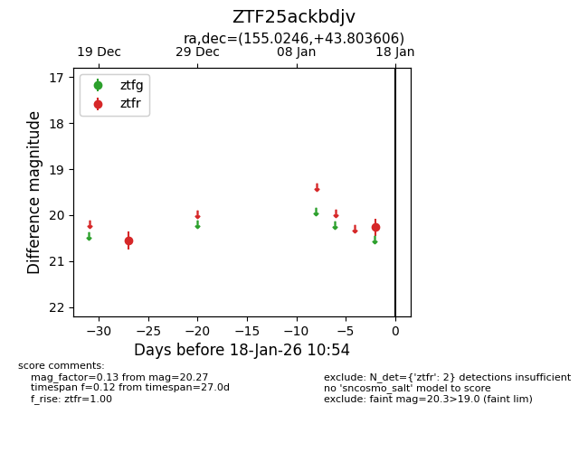
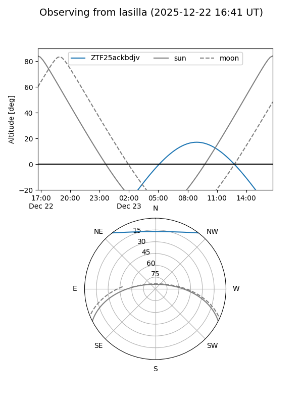
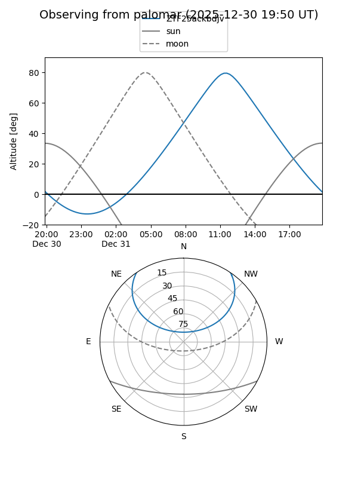

ZTF25ackbdjv
Target ZTF25ackbdjv at 2025-12-22 19:44
Aliases and brokers:
FINK: fink-portal.org/ZTF25ackbdjv
Lasair: lasair-ztf.lsst.ac.uk/objects/ZTF25ackbdjv
ALeRCE: alerce.online/object/ZTF25ackbdjv
alt names
ZTF25ackbdjv (ztf,fink_ztf)
Coordinates:
equatorial (ra, dec) = 155.0246,+43.80361
equatorial (HMS+DMS) = 10:20:05.92,+43:48:12.98
galactic (l, b) = (174.1165,+55.37809)
Flags:
Photometry:
last ztfr=20.55
1 ztfr detections
Lightcurve

Visibility


Additional plots